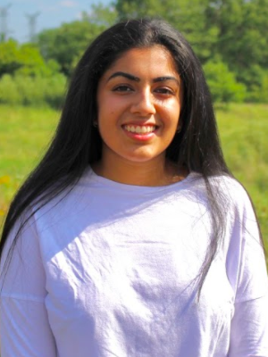
Meera Mehta
Hey! My name is Meera Mehta and I am so excited to be one of your CYCS Presidents! Being part of this incredible organization has given me the opportunity to serve my community in a creative way. Nimar and I hope to contninue to support all those in need during these difficult times with the help of our hardworking executive team and ambassadors!
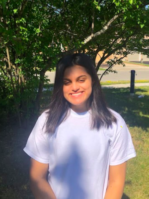
Nimar Soni
Hi! My name is Nimar and I am one of your presidents at CYCS :) CYCS, for me is an outlet of endless opportunities. I was sitting at home and doing absolutely nothing, and then I realized that I could be making a difference as a member of the community, which is why I along with Meera, I started what is now known as CYCS.
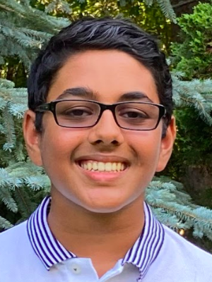
Rajan Agarwal
Rajan is a Director of Promotions, who is the lead coder of this very website! He has over 2 years of web development experience, and will always set a goal and complete every task with flying colours!
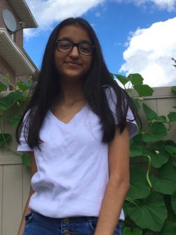
Vidhi Pandya
Vidhi is a Director of Promotions for CYCS and is a a lead manager for all social media platforms. She aspires to ensure the aims and goals are presented well in order to successfully carry out each initiative and help several individuals in need amidst this pandemic.
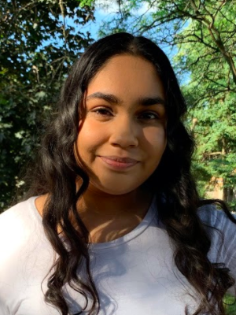
Anmol Dhaliwal
Anmol is a Director of Promotions for CYCS and a lead manager for all our social media accounts. She strives to ensure quality in every marketing strategy used at CYCS and aids in our goal to help the community in Ontario during the COVID-19 Pandemic.
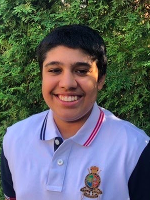
Armaan Gill
Armaan is a Director of Sponsorship and Finance for CYCS. He is committed to wokring together to bring a stong understanding of CYCS' finanical needs to make it the best it can be.
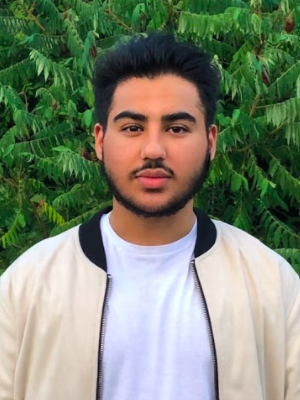
Gurjot Jhutty
Gurjot is a Director of Sponsorship and Finance for CYCS.
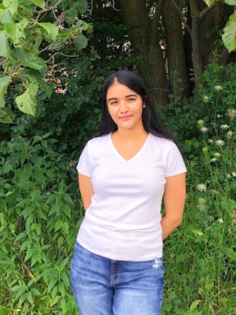
Ishnoor Rattan
Ishnoor is a Director of Sponsorship and Finance for CYCS. She strives to make connections with local businesses, in order to work together and help strengthen our community during these unprecedented times.
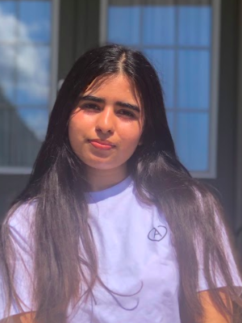
Akanksha Dayed
Akanksha is a Director of Sponsorship and Finance for CYCS. Her goals include strengthening community relations in order to help during this global pandemic.
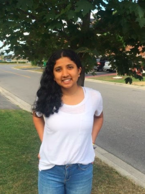
Ashmi Shah
Ashmi is a Director of Ambassadors at CYCS. With a strong belief in leadership and empathy, she is passionate about helping the community in any way possible.
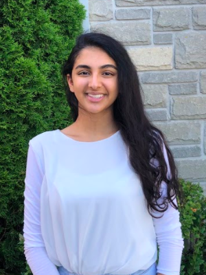
Riya Tangri
Riya is a Director of Ambassadors at CYCS. She wishes to empower youth to work together in order to make a positive impact on the community.
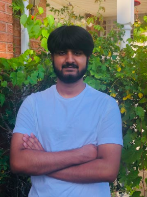
Zuhary Khan
Zuhayr is a Director of Ambassadors at CYCS.
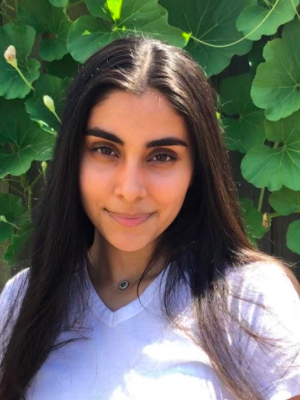
Prabhleen Kaur
Prabhleen is a Director of Initiatives at CYCS. She aspires to utilize her creative and strategic abilities to make a difference within our community, and work alongside her team to encourage appreciation towards our healthcare heroes.
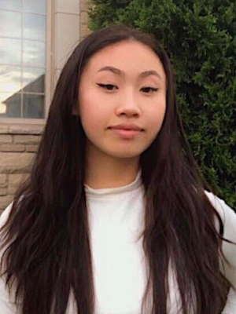
Miranda Chen
Miranda is a Director of Initiatives for CYCS who enjoys caring for others and strongly values empathy. She strives to apply her leadership and creative skills into her passion of creating a positive change in the community.
Dhivya Bhaskaran
Divya is a Director of Initiatives for CYCS and she has a passion for music! She strives to make a positive impact in her community as well as within those individuals surrounding her.
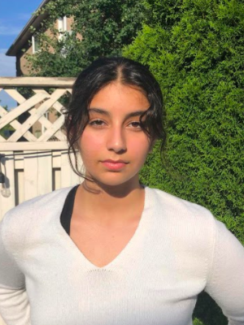
Deema Sidek
Hi! I am Deema, and I am one of your Directors of Initiatives. I am incredibly grateful for an opportunity to help the many people who have been affected by Covid-19.